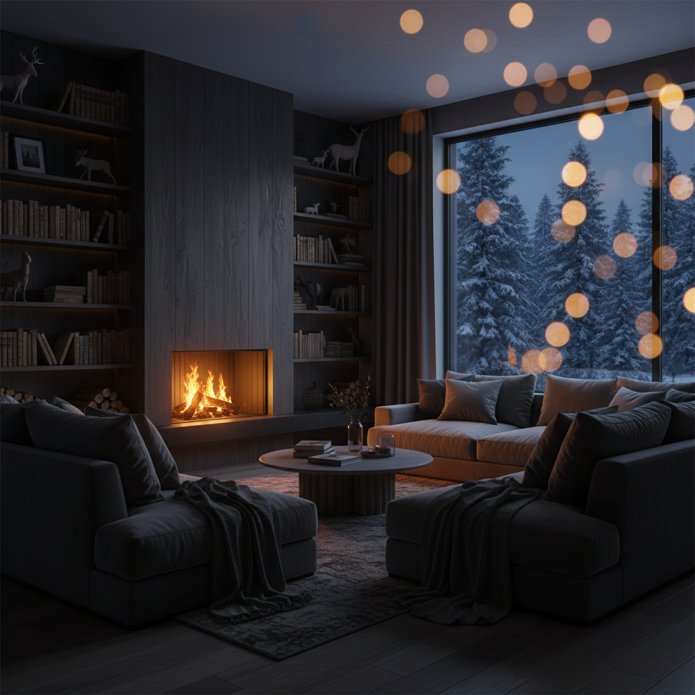

Hearth: Movie Night with Pip
Modern television has 10,000 tiles — yet choosing what to watch still feels lonely. Hearth is the cozy Fire TV living room, and Pip is the AI companion living inside it.

Hearth is the place · Pip is the companion
Pip tends the fern, warms up by the fire, and welcomes you home without endless menus or pressure.

Pip Remembers Your Life & Past Movie Nights
Recalls your granddaughter’s recital (adding a drawing to the wall) and remembers watching Sintel & pausing Tears of Steel at 6:20.


Pip Chooses Tonight’s Film & Sends the Pick Card to Your Phone
Narrows the TV shelf to Big Buck Bunny (Open Film) & Paddington (Prime Video) while pushing one-tap launch actions to your phone.
Ask Pip to Dance — Spoken Request Triggers Live Choreography
Nova 2 Sonic invokes `perform_world_action`, waits for `[TV acknowledgment]` from the living room, and dances by the fire.

Speak Into Your Phone to Pause the TV — Or Keep Talking in Prime Video
Spoken phone command triggers `tv-pause` with verified `PAUSED` telemetry; when the TV switches apps, Pip stays alive on your phone.
Native 1080p Fire TV / Vega OS Package (`com.hearth.tv.main`)
D-pad directional focus, `kpenter` remote selection, Cold ↔ Cozy atmospheric transitions, and `@amazon-devices/kepler-media-controls`.
Dual-Surface Fire TV + Paired Phone + Amazon Bedrock Nova 2 Sonic
Every world gesture and TV playback action is schema-validated (`lib/sonic.mjs`) and waits for real television acknowledgment.
Fire TV & Vega OS App
1920×1080 living room SVG stage, D-pad spatial navigation, HTTP 206 Hearth Cinema player, and Prime Video deep-link handoff.
QR-Paired Phone
Streams 16 kHz mono PCM from phone mic, receives pushed Movie Night pick cards, controls TV playback, and survives TV app switches.
Node.js Room & Voice Server
Manages private QR pairing tokens, routes `tv-command` and `movie-pick` events, and enforces strict tool-use whitelists.
Nova 2 Sonic + Nova 2 Lite
Bidirectional 24 kHz speech-to-speech with tool use (`perform_world_action`), grounded movie ranking, and hands-free attention gating.
Hearth: Movie Night with Pip
Your TV Has Someone In It.